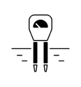

REVOLUTIONIZE YOUR FARMING
Grow. Optimize. Succeed.

Soil Moisture and Nutrient Sensor
Accurately measure the health of your crops with high-quality soil moisture and nutrient sensors.
Customized recommedndation
Our system uses artificial intelligence to provide customized recommendations for optimal crop management based on real-time data.
User Friendly
Our dashboard is easy to use and provides real-time data and analytics on your crops, soil moisture, and nutrients.

Mobile Compatibility
Access your data on-the-go with our mobile-friendly platform. This feature is particularly useful for farmers who need to monitor their fields while in the field.
Historical Data Storage
Our system stores historical data, allowing you to track changes over time and make informed decisions about future crop management.